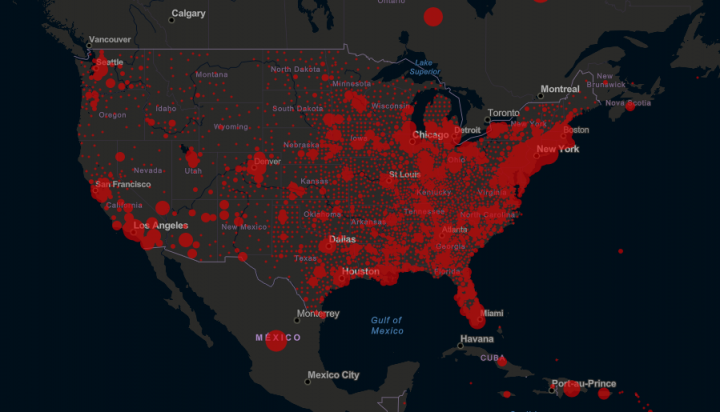
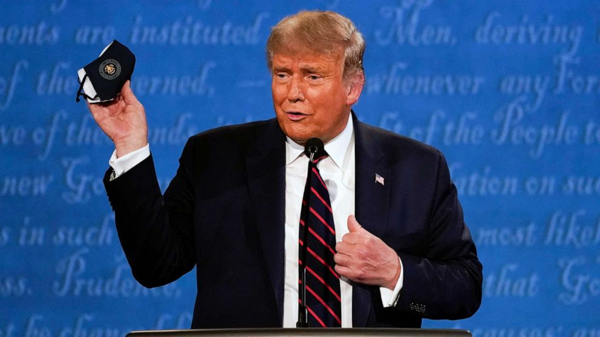

Corona Virus cases in the U.S. in April 2020.
A Country at Ends
Our country stands divided. At a time where, more than ever, the situation at hand calls for unity in the face of a global health crisis, the United States is spiraling. There is duplicity in the news, the existence of a cancel culture that has built itself around demonizing individuals, and overall just a deficit in the human kindness that is needed to weather these times of uncertainty. At such times, we would normally look to our President for hope and inspiration. A comfort in knowing someone is guiding the ship, so to speak. For us now, that President is Donald J Trump. He is currently ill from the novel Coronavirus plaguing our nation and the world, and for some Americans, that news is their comfort. We exist at a time where a position that someone may defend, more so than their political beliefs, is the justification for another human being’s life-threatening illness. I won’t waste too many words on why it is deplorable that a large group of people can justify suffering of any kind, or that they can celebrate Herman Caine’s, or anyone’s unfortunate passing from the virus, as a political victory. Instead, I want to explore what sort of unprecedented events have lead to this, and what it means for our country’s future, no matter who we choose as President going forward.
President Donald Trump holding his mask.
Before the Coronavirus was widely known about, Trump was a divisive figure. His executive order 13767 to construct a wall between the U.S. and Mexico’s borders painted him in infamy, and his further request for Mexico to pay for such a thing only added to that view. After the virus was publicly known in early January of 2020, Trump quickly initiated a task force to research the virus and implemented policies like travel bans to halt it’s spread. He worked with companies like Johnson and Johson to pivot their operations toward developing a vaccine. However, his current public profile portrayed an individual who spread misinformation about other topics and refused to cooperate with the media. Through media platforms like Twitter he would continuously tweet about how the virus wasn’t a big deal, or how it’s potentially fatal side-effects were a hoax generated by the false media. As a figure already seen as shady for refusing to release his tax documents, and having used Twitter to send out derisive speech against democrats and the media, he developed trust issues with the populace, tweeting out his support in China’s transparency in handling the virus saying things like Chinese President Xi will “be successful, especially as the weather starts to warm & the virus hopefully becomes weaker, and then gone”, despite health officials warnings about the severity of the virus as well as that their was no evidence it would be weakened by the changing temperatures. This dichotomy of action and word swiftly created 2 groups: People who disbelieved Trump, and people who disbelieved medical professionals. The division between these two groups would only increase as each month in 2020 brought more problems and a higher death toll due to the Coronavirus. Trump himself only fanned the flames more as he complied with health officials to shutdown businesses and instigate Statewide curfews in the hotspots like New York and California, while also not only refusing to wear masks but tweeting about how unnecessary they were. In fact, during the first Presidential debate held in September, the president not only refused to wear a mask, he made inflammatory remarks directed at Biden for wearing one. For all his admitted efforts to contain one side of the fire that is the virus in policies or even stimulus packages to lessen the unemployment burdens, President Trump has only allowed the other side to flare up, stoking the fires with misinformation about lessening concerns and safety measures. And were this not enough, his discriminating tone that refuses to submit to authority has pitted half of this country against the various doctors and first respondents who have been trying to stop this thing from the beginning.
This has erupted in huge political ramifications for our country. Responding to the virus, or any form of global pandemic has become a centralized talking point for potential Presidential candidates now, and likely in the future as well. We have political advertisements on tv, showing empty stores, streets, and stadiums to push the idea that Biden would have handled the pandemic better. On the other end, Trump rallies are dominated by a lack of masks, miscarrying the idea of personal freedom to a frightening level.
Economically speaking, the pandemic has done a lot to shape the country. During April, there was a huge spike in the unemployment rate as businesses were shutdown to account for lock down orders. Major businesses with the resources to do so quickly shifted toward making masks, despite the President’s insistence that they are still unnecessary. Businesses such as breweries shifted to making hand-sanitizer, selling them locally. Making masks has been a booming business, with a M95 mask shortage early on in the year leading hobby shops like Micheal’s and Joann’s to post DIY tutorials on their websites on how to make homemade masks that could hold a secondary filter layer while still being machine-washable. This secondary market of masks and other pandemic related items has flourished through online service websites like Etsy.com, which allows for craft-minded individuals to sell their own custom masks with unique patterns, color schemes, and appearances. In spite of all of this change, the most interesting aspect was the reported growth of the stock market under Trump. Even with all of the remote work that had to occur, a nationwide stimulus check ordination, and the immense amount of people who went on unemployment, the stock market did not plummet. However, I feel that the worst changes were the one’s we’ve all experienced socially.
It may only be for a finite period, but the pandemic has killed what it means to socialize. Masks create a barrier for emotion and personality to come through, as needed as they are. And for the mask vs. non-mask debate, because of their immense visibility, masks can make you a target if you are in the wrong place. On the other end, not wearing a mask is shamed too. Even when in remote locations, if you pass other people without having a mask on or covering your face in some way, you can’t know for sure if you haven’t committed a faux pas. Ultimately it’s lead to a marked increase in
Being around individuals who
don’t take mask sanctions seriously
now feels like being around people
who are violating your personal rights.
stress at all times, whether cooped up at home for social distancing or at some retail location wondering if you are somehow contributing to a problem that isn’t immediately visible. Being around individuals who don’t take mask sanctions seriously now feels like being around people who are violating your personal rights. And even after we get a recommended vaccine, if those people are close friends or family, it will be a strain to be around them, knowing what they would respond to life-threatening conditions with.
Trust is crucial now more than ever, but I don’t feel like the world we live in, or the lifestyles we need to take on to survive, fosters the empathetic conditions we need to come together and beat this. I disagree with Trump as President, not because I don’t feel he did enough for our country, but that his mindset has further removed the values we need to keep alive now. A president should also be a leader, and under them a country united. This is an impossibility when we have a president comfortable with being intentionally vague about their plans, or even going so far as to spread misinformation with the belief that Americans should look at the info and decide for themselves what it means. But there is still hope. The positive side of this pandemic, if we look hard enough, is the realization that progress, technological or otherwise, will always move forward. There will always be problems to solve, devices to be built, and a higher layer of comforts to add to our lives. However, our own progress as humans, and what it means to be a human over any other organism, will fall away if we continue to blunt our sense of sympathy, empathy, and desire to understand before being understood.